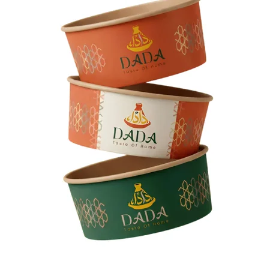
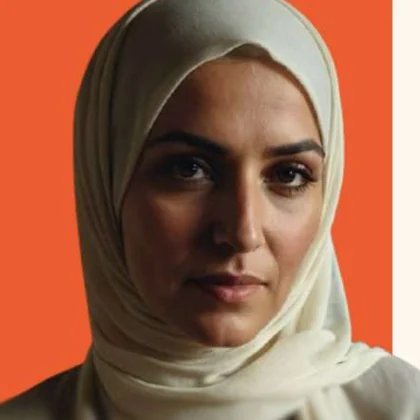
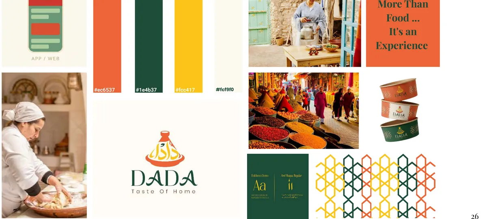
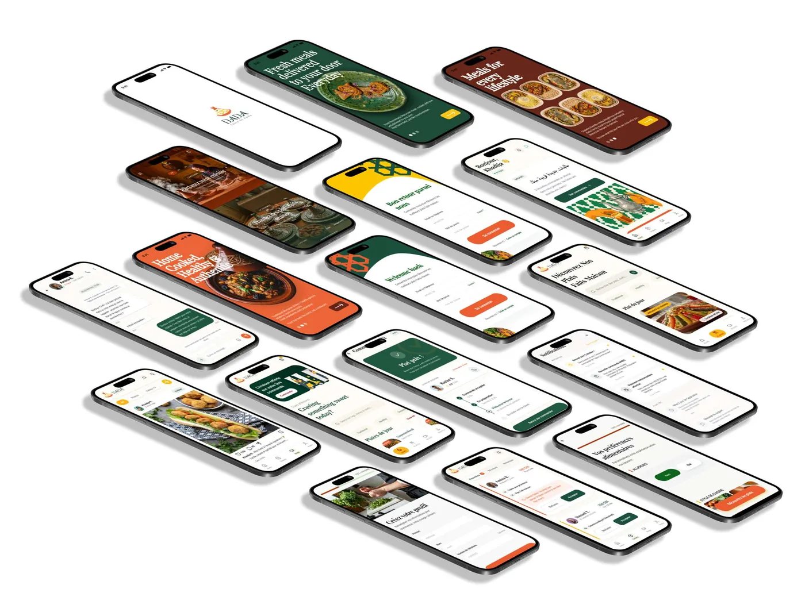
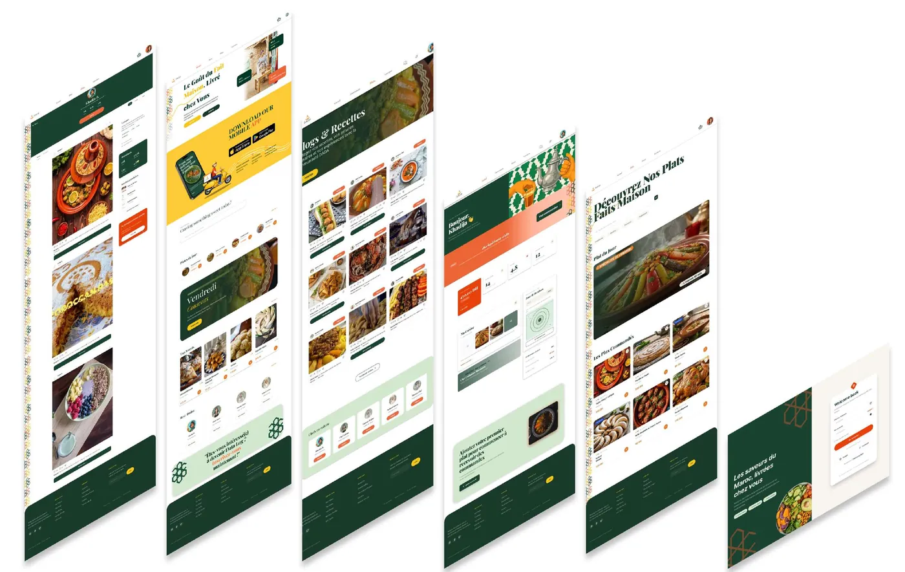
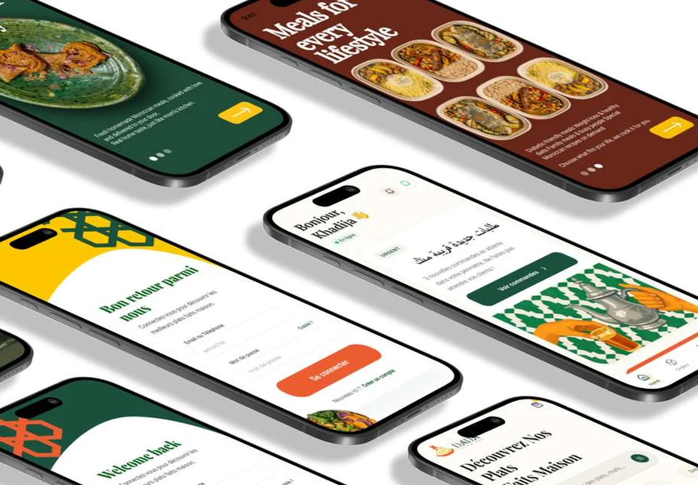

Une plateforme qui permet aux femmes marocaines de vendre leurs plats faits maison depuis chez elles — et aux clients de retrouver une cuisine de confiance.

Étude de casDigital Design · Option UI
Réalisé parAya Karim · Asmaa Nejmaoui Nissrine Amine · Hamza Zaydoune
Encadré parM. Ounsy
Année2025 / 2026
Taste of Home
La problématique
Le projet part d'un déséquilibre : d'un côté un savoir-faire culinaire transmis mais invisible, de l'autre des clients qui cherchent du fait maison sans canal fiable pour y accéder.
Côté cuisinières
Problème central
Les femmes marocaines possèdent un véritable savoir-faire culinaire ancestral, mais n'ont pas les moyens d'ouvrir un commerce physique. Elles ne peuvent pas valoriser leur talent sans un espace structuré.
Conséquences
Revenus limités au bouche-à-oreille informel
Absence de visibilité en dehors du cercle proche
Aucune gestion structurée des commandes
Dépendance financière persistante
Côté clients
Problème central
Les clients cherchent des plats authentiques, faits maison, sains mais n'ont aucun canal fiable pour y accéder. Les plateformes existantes ne proposent pas de cuisine traditionnelle marocaine de qualité.
Conséquences
Manque de confiance envers les cuisines inconnues
Impossible de vérifier hygiène et ingrédients
Plats industriels, sans authenticité
Peu d'accès à une cuisine maison de qualité
Découverte du projet et objectifs01
Taste of Home
La solution DADA
La plateforme
DADA est un espace numérique sécurisé qui permet aux femmes de créer un profil professionnel, présenter leurs plats, gérer leurs commandes et ventes — directement depuis leur domicile, sans investissement lourd.
L'impact visé
Transformer le savoir-faire culinaire ancestral des femmes marocaines en levier d'autonomie financière réelle, tout en offrant aux clients un accès simple à une cuisine fait maison, authentique et de confiance.
Fonctionnalités clés
Profil cuisinièreCréation d'un profil avec photo, spécialités, tarifs et disponibilités. Bio personnalisée et avis clients.
Catalogue de platsMenu interactif avec photos, ingrédients, prix et options de personnalisation. Gestion des disponibilités en temps réel.
Système de commandeCommande en ligne avec suivi en temps réel, notifications et gestion des créneaux de livraison ou de retrait.
Paiement sécuriséPaiement en ligne ou à la livraison, portefeuille digital intégré et transactions protégées pour les deux parties.
Système d'avisNotation et commentaires vérifiés pour bâtir la confiance entre cuisinières et clients sur la plateforme.
Découverte du projet et objectifs02
Taste of Home
Questionnaire & analyse
Dix questions posées à des consommateurs sur leurs habitudes de commande, leur rapport au fait maison et leurs freins. Cinq réponses ont cadré le produit.
90%
veulent être livrés en moins de 30 minutes
85%
préfèrent commander de la cuisine marocaine traditionnelle en ligne
78%
attendent un suivi de commande en temps réel
72%
préfèrent une application dédiée à une commande par WhatsApp
68%
lisent les avis clients avant de commander
Résultats déclaratifs du questionnaire du projet — la plateforme n'étant pas en ligne, ce ne sont pas des chiffres d'usage.
Idéation03
Taste of Home
Personas
Deux profils, deux peurs opposées : elle a peur de ne pas y arriver, lui a peur de mal tomber. Toute l'interface se construit sur ces deux craintes.

Farah El Idrissi
Âge42 ans VilleCasablanca ProfilCuisinière à domicile
Besoins
Un revenu depuis la maison, sans local ni capital
Une plateforme simple, utilisable sur un téléphone basique
Des repères clairs sur l'hygiène et les règles légales
Recevoir les commandes et les paiements sans friction
Habitudes
Cuisine régulièrement pour sa famille
Utilise WhatsApp et les réseaux pour partager ses plats
Reçoit déjà des commandes informelles de voisins
Peurs
Peur de la technologie et du paiement en ligne
Peur des avis négatifs et de ne pas trouver de clients
Méconnaissance des procédures légales
Crainte d'un problème d'hygiène ou de qualité
Comportement
Hésite avant d'essayer une nouvelle application
Prend elle-même les photos de ses plats
Répond vite aux demandes de ses clientes
« Je veux gagner de l'argent depuis chez moi — mais puis-je vraiment faire cela ? »
Youssef Benali
ProfilÉtudiant RôleClient UsageMobile
Besoins
Trouver facilement des plats marocains faits maison
Photos, avis et notes des cuisinières avant de commander
Commander vite, être livré ou récupérer à proximité
Un prix et un délai annoncés à l'avance
Habitudes
Commande depuis son téléphone
Vérifie les avis avant d'acheter
Repasse commande là où il a été satisfait
Peurs
Doute sur l'hygiène et les conditions de préparation
Peur que le plat ne corresponde pas aux photos
Livraisons en retard
Comportement
Compare les prix et les options
Suit les contenus food sur Instagram et TikTok
Sensible aux promotions et aux réductions
« Je veux de la bonne nourriture maison, pas de la restauration rapide. »
Conception04
Taste of Home
Charte graphique
Un logotype, trois couleurs et trois alphabets — dont l'arabe, qui porte le nom de la marque.
Le nom. En darija, « dada » désigne affectueusement la femme qui cuisine pour les autres — une figure maternelle associée au savoir-faire et à la transmission des recettes.
La forme. Le tagine stylisé porte la calligraphie ; le jaune à l'intérieur figure les épices et la richesse des plats.
Moodboard

Charte graphique05
Taste of Home
Maquettes
Une application pour les deux côtés du marché et un site qui sert de vitrine. Le vert accueille, l'orange déclenche l'action.

Application mobile — onboarding, connexion, accueil personnalisé, catalogue de plats, fiche cuisinière, commande et suivi.

Site web — découverte des plats, profils de cuisinières et parcours de commande sur grand écran.

Le détail qui rassure — sur l'accueil, la cuisinière est saluée par son prénom et son statut du jour s'affiche en arabe comme en français. Pour Farah, qui hésite devant une nouvelle application, cette première ligne fait la différence.
Maquette06
Taste of Home
Ce qu'il reste à prouver
Les pourcentages ci-dessus viennent du questionnaire, pas de l'usage : la plateforme n'est pas encore en ligne. Trois indicateurs diront si la promesse tient.
Les cuisinières vont-elles jusqu'au bout ?
Part des profils commencés qui sont publiés avec au moins un plat. C'est là que la peur de la technologie se mesure.
La confiance se construit-elle ?
Part des commandes suivies d'un avis vérifié, et délai avant la première commande répétée chez la même cuisinière.
La promesse de rapidité tient-elle ?
90 % des répondants attendent moins de 30 minutes : c'est l'engagement le plus exposé du produit.